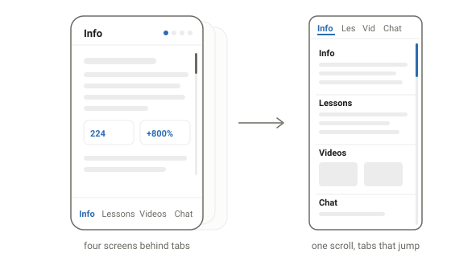

(AI) FDE guide
Becoming a forward deployed engineer, as a one-page app: what the job is, seven lessons from zero, videos worth your time, and a tutor to chat with.
Contents
What is an FDE?
A forward deployed engineer is a hybrid of consultant and engineer. Half the job is writing code; the other half is sitting with the customer — understanding their problem, building on their systems, and explaining the result to their team. The title started at Palantir, and it exploded with the rise of AI tools: every company wants AI in their workflow, but ~95% of enterprise AI pilots fail when the demo meets real systems. So AI companies send out people who can do both the coding and the people part. That's the FDE.
What the FDE interview looks like
Usually 5–8 stages over 3–6 weeks — but strip away the recruiter screens and the generic rounds, and three skill tests decide it. Each gate expands below — tap one to collapse it.
Coding60 min
Practical and LLM-flavored — not LeetCode. Messy CSVs, a rate limiter, API scaffolding around a model. A growing set of companies run it AI-assisted: you get a codebase and a coding agent like Claude Code, and they watch whether you direct and verify it — or just accept whatever it writes. OpenAI adds a take-home: build something real on their API, like a small RAG system or agent. Silence while you work is the #1 rejection here; narrate.
Case study45–60 min
A vague customer problem — you scope it. 'A city wants faster 911 response using call data, traffic data, and ambulance GPS. Go.' The single biggest filter in the loop, and the #1 rejection is solving before scoping. Clarify the goal → stakeholders & metrics → what data exists → decompose → thin MVP first.
Client sim45 min
Present your product to a role-played customer. You demo, defend trade-offs, and deliver bad news: 'the deployment slipped three weeks — tell the CTO,' or explain to a non-technical VP why RAG can't promise 100% accuracy. Say 'I will,' never 'the team is looking into it.' At Anthropic this round quietly filters ~60% of candidates who pass coding.
Which extras wrap these varies by company — a behavioral round, sometimes an LLM system-design round. Coding gets you in the door; the blue gates decide the offer: the case study's #1 rejection reason is solving before scoping, and the client sim quietly filters most candidates who pass coding.
Sources
- Nabeel S. Qureshi, Reflections on Palantir (2024).
- Andrew Ng, on the AI FDE (2026).
- JobsByCulture FDE tracker; KORE1 hiring guide (incl. the MIT NANDA statistic).
- CNBC on AWS's $1B unit (June 2026).
- Exponent FDE interview guide; Exponent on the Anthropic FDE loop; Perspective AI prep guide.
- Exponent on AI-assisted coding rounds (Meta, Shopify, Rippling & others now run them).
Seven lessons, from zero
Each lesson ends with something working. Do them in order — the early ones build intuition the later ones spend. Tap a lesson to expand.
0 Set up Claude CoworkFeel what an agent does — before writing any code start here
Get an AI agent doing real work for you, zero code. This builds the intuition every later lesson spends.
- Install Claude and set up Cowork
- Connect it to your browser
- Have it filter your email inbox — archive noise, surface what matters
- Or: have it order your food. Watch how it navigates, clicks, recovers
1 Agentic coding toolsLearn the prompt → diff → run loop Claude Code recommended
Ship something tiny with an AI coding agent. You're learning how to direct an agent — the core FDE motion.
- Install Claude Code (recommended), Cursor, or Gemini CLI
- Build a small script or tool with it end to end
- Practice reviewing diffs before accepting them
2 Build a simple websiteHTML, CSS, a little JS — then put it on the internet
Something a stranger can visit. Deployment is the point, not the design.
- Build a small site: plain HTML/CSS/JS is enough
- Deploy it on GitHub Pages (free, no servers)
- Change something and redeploy — feel the loop
3 Learn a cloud platformGCP or AWS — where customer systems actually live
Deploy something to real cloud infrastructure and understand what you did.
- Pick one: GCP or AWS (free tier)
- Deploy your site or a small API there
- Learn the basics you'll meet everywhere: IAM, storage buckets, a VM or Cloud Run/Lambda
- Optional but valuable: containerize it with Docker
4 Build a simple ChatGPTLLM API calls, then RAG or MCP
A chat UI that answers questions about YOUR documents — the demo every customer asks for first.
- Call an LLM API directly (Anthropic or OpenAI) from your own code
- Add RAG: retrieve from your notes/files before answering
- Or wire MCP servers to give the model tools and data
- Bonus: an eval set — 10 questions, scored, so you can say 'how do I know it works'
5 Build agentic AIReAct loop + tool calling
An agent that reasons, picks tools, observes results, and retries — the loop behind everything in lessons 0–1.
- Implement a ReAct loop: reason → act → observe → repeat
- Give it 2–3 real tools via tool calling (search, calculator, your API)
- Watch where it fails; add guardrails and a stop condition
- Log every step — traces are how you debug agents
6 Build this demoRebuild the page you're reading right now capstone
One HTML file, no framework: four sections, a jump-nav tab bar, and a working AI chat. The page you're reading is the spec, and view-source is the answer key.
- Build the four-section, one-file page with a tab bar that's fixed at the bottom on phones and sticky on top on desktop
- Add scrollspy and deep links: highlight the active tab as the reader scrolls, and keep the URL hash current
- Build the lesson accordions and interview-gate callouts with native
<details>, so everything still works with JavaScript off - Wire the chat to the Anthropic API with a bring-your-own-key box, and ship it on the GitHub Pages site from lesson 2 — then put it on your resume

finish lesson 6 and you've built the page you're reading
Videos worth your time
Curated picks from YouTube, grouped by lesson. Each link opens in a new tab.
The job
 The FDE Playbook for AI Startups with Bob McGrewY CombinatorEx-Palantir/OpenAI leader on why AI companies hire FDEs
The FDE Playbook for AI Startups with Bob McGrewY CombinatorEx-Palantir/OpenAI leader on why AI companies hire FDEs
 The Role of a Forward Deployed Software EngineerPalantirThe canonical day-in-the-life, from the company that invented the job
The Role of a Forward Deployed Software EngineerPalantirThe canonical day-in-the-life, from the company that invented the job
 Inside OpenAI Enterprise: Forward Deployed Engineering, GPT-5, and MoreBg2 PodHow OpenAI adopted the FDE model for enterprise
Inside OpenAI Enterprise: Forward Deployed Engineering, GPT-5, and MoreBg2 PodHow OpenAI adopted the FDE model for enterprise
Lesson 0 · Claude Cowork ↳ lesson 0
 Introducing Cowork: Claude Code for the rest of your workAnthropicOfficial launch demo
Introducing Cowork: Claude Code for the rest of your workAnthropicOfficial launch demo
 Learn 80% of Claude Cowork in Under 20 MinutesJeff SuFast setup-to-daily-workflows walkthrough
Learn 80% of Claude Cowork in Under 20 MinutesJeff SuFast setup-to-daily-workflows walkthrough
 How the engineer behind Claude Cowork actually uses ClaudeHow I AIThe Cowork engineering lead demos real agentic workflows
How the engineer behind Claude Cowork actually uses ClaudeHow I AIThe Cowork engineering lead demos real agentic workflows
Lesson 1 · Coding tools ↳ lesson 1
 Claude Code best practices | Code w/ ClaudeAnthropicOfficial best-practices talk
Claude Code best practices | Code w/ ClaudeAnthropicOfficial best-practices talk
 Getting started with Gemini CLIGoogle Cloud TechOfficial install-and-first-workflows session
Getting started with Gemini CLIGoogle Cloud TechOfficial install-and-first-workflows session
 Cursor Tutorial for Beginners (AI Code Editor)Tech With TimBeginner tour of Cursor's core features
Cursor Tutorial for Beginners (AI Code Editor)Tech With TimBeginner tour of Cursor's core features
Lesson 2 · Web basics ↳ lesson 2
 HTML Tutorial — Website Crash Course for BeginnersfreeCodeCamp.orgA first website, from scratch
HTML Tutorial — Website Crash Course for BeginnersfreeCodeCamp.orgA first website, from scratch
 HTML Crash Course For Absolute BeginnersTraversy MediaThe classic beginner crash course
HTML Crash Course For Absolute BeginnersTraversy MediaThe classic beginner crash course
 Getting started with GitHub Pages for beginnersGitHubOfficial guide to free static deploys
Getting started with GitHub Pages for beginnersGitHubOfficial guide to free static deploys
Lesson 3 · Cloud ↳ lesson 3
 AWS Certified Cloud Practitioner Course 2026 (CLF-C02)freeCodeCamp.orgThe flagship AWS fundamentals course
AWS Certified Cloud Practitioner Course 2026 (CLF-C02)freeCodeCamp.orgThe flagship AWS fundamentals course
 Google Cloud Associate Cloud Engineer CoursefreeCodeCamp.orgFull GCP fundamentals: IAM, compute, storage
Google Cloud Associate Cloud Engineer CoursefreeCodeCamp.orgFull GCP fundamentals: IAM, compute, storage
 Docker Tutorial for Beginners [FULL COURSE in 3 Hours]TechWorld with NanaThe most-recommended Docker intro
Docker Tutorial for Beginners [FULL COURSE in 3 Hours]TechWorld with NanaThe most-recommended Docker intro
Lesson 4 · RAG & LLM APIs ↳ lesson 4
 Learn RAG From ScratchfreeCodeCamp.org2.5-hour RAG course by a LangChain engineer
Learn RAG From ScratchfreeCodeCamp.org2.5-hour RAG course by a LangChain engineer
 Building Agents with Model Context Protocol — Full WorkshopAI EngineerThe definitive MCP intro, taught by Anthropic
Building Agents with Model Context Protocol — Full WorkshopAI EngineerThe definitive MCP intro, taught by Anthropic
 ChatGPT Clone — OpenAI API and React TutorialfreeCodeCamp.orgBuild a chat app end-to-end on an LLM API
ChatGPT Clone — OpenAI API and React TutorialfreeCodeCamp.orgBuild a chat app end-to-end on an LLM API
Lesson 5 · Agents ↳ lesson 5
 Deep Dive into LLMs like ChatGPTAndrej KarpathyThe definitive 3.5-hour deep dive on how LLMs work
Deep Dive into LLMs like ChatGPTAndrej KarpathyThe definitive 3.5-hour deep dive on how LLMs work
 Guide to Agentic AI — Build a Python Coding AgentfreeCodeCamp.orgA from-scratch agent loop with real tool calling
Guide to Agentic AI — Build a Python Coding AgentfreeCodeCamp.orgA from-scratch agent loop with real tool calling
 How We Build Effective Agents: Barry Zhang, AnthropicAI EngineerAgent-loop and tool-design patterns, distilled
How We Build Effective Agents: Barry Zhang, AnthropicAI EngineerAgent-loop and tool-design patterns, distilled
Chat with the tutor
This is lesson 6's chat, running on this page. Bring your own key and ask about the job, the interview, or any lesson.
Bring your own key: it's stored only in this browser (localStorage) and requests go directly to Anthropic — nothing touches this site's server, because there isn't one. Use a key with a spend limit.
Built like the rest of this site — plain HTML, one file, no framework. With JavaScript off, everything still reads top to bottom and the tab bar is plain links.